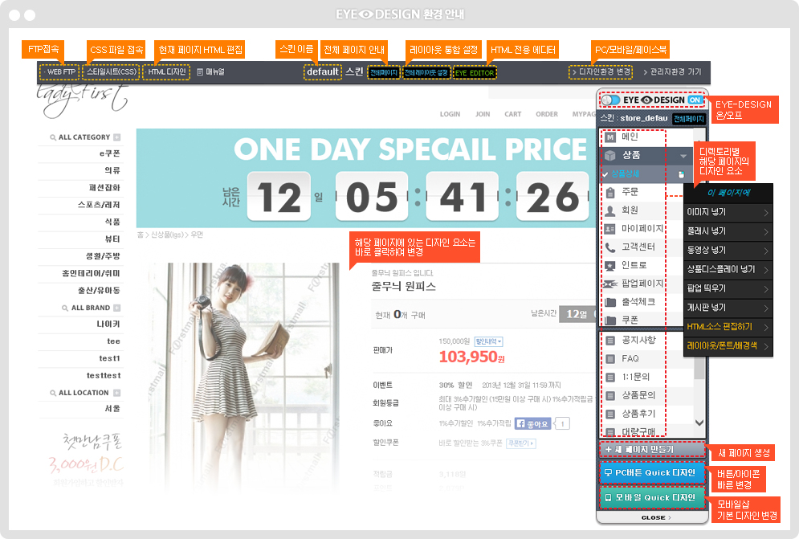

{ #layout_header_popup }

<script>

var front_go_sec = 2; // n초후 이동
var front_go_timer = setInterval("front_go()",front_go_sec*1000);

function front_go(){
	$("#progress_bar").stop(true,true).show();
	document.location.href="../design/front_action?frontUrl={frontUrl}";	
}

function front_go_stop(){
	$("#progress_bar").fadeOut();
	clearInterval(front_go_timer);
}

</script>


<div class="pd40 center">
	<div class="pdt30"></div>
	<div class="pdt30"></div>
	<div class="pdt20">
		<a href="#" onclick="front_go_stop()"></a>
		<a href="#" onclick="front_go()"></a>
	</div>
	<div class="pdt10" style="height:9px"></div>
	
	<div style="text-align:center; margin-top:40px">
		
	</div>
	
</div>

{ #layout_footer_popup }